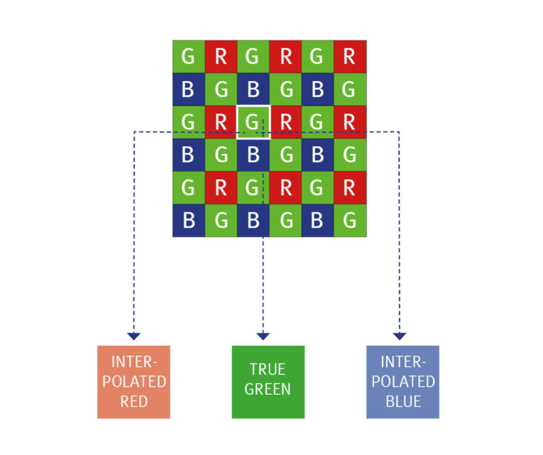

Фотографическая матрица
Прибор, преобразующий световой поток в электрический сигнал. Стоит, как правило, за затвором. Фиксирует изображение в цифровой камере.

Пять операций сенсора
- поглотить фотоны
- превратить в заряд
- накопить
- превратить в напряжение
- передать дальше

ПЗС и КМОП
- ПЗС — заряд к общему выходу
- КМОП — преобразование в пикселе
- Ещё: Live-MOS, Super CCD, SIMD WDR…
Сейчас почти везде КМОП. Back-illuminated / Exmor — как выжали площадь фотодиода

Как получают цвет
- три матрицы (3CCD)
- мозаика фильтров: RGGB, RGBW, X-Trans…
- полноцветный пиксель


Фильтр Байера
Мозаика цветных фильтров над фотодиодами: 50% зелёных, 25% красных, 25% синих. Цвет собирает интерполяция.

Демозаика


Усреднение соседей · расчёт недостающих каналов · sharpening
Оптическое разрешение матрицы
Способность воспроизвести близко расположенные объекты. Линейное — минимальное расстояние. На практике: пиксели по сторонам и общее число.

Шумы
- Темновой ток — термоэмиссия в «яму» без света
- Тепловой — хаос носителей
- Структурный / случайный / линейчатый
SNR — фототок к темновому. Больше площадь пикселя — лучше.


Экспозиционный индекс EI
Числа файла сопоставимы с плёнкой той же ISO при тех же K и t. К кремнию относится косвенно.

Динамический диапазон
Способность воспроизводить различия яркостей с одинаковой степенью контраста. В EV: от шума в тенях до насыщения ячейки в светах. Глаз ~14 EV, камеры сейчас примерно 6–15.

Глубина цвета
Сколько полутонов на канал — разрядность АЦП. 8 бит × 3 = 24 бита ≈ 16,7 млн цветов.

Цветопередача
Две камеры на одну сцену — разные RGB даже при одном ББ. Охват камеры меньше глаза, бумаги — меньше камеры и монитора.

Экспозиция
Количество излучения на приёмнике. Для видимого света:
H = E · tосвещённость × выдержка · люкс-секунда

Треугольник экспозиции

Режимы съёмки
- Auto · P · A/Av · S/Tv · M · B